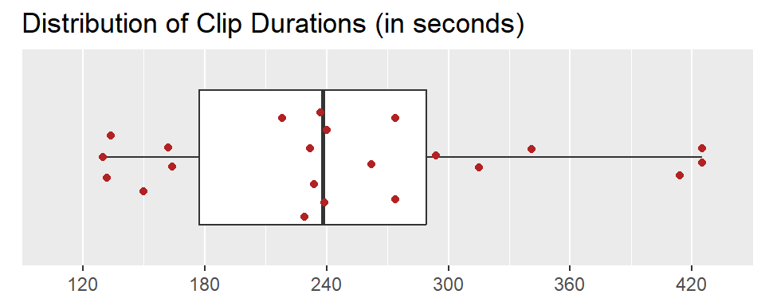
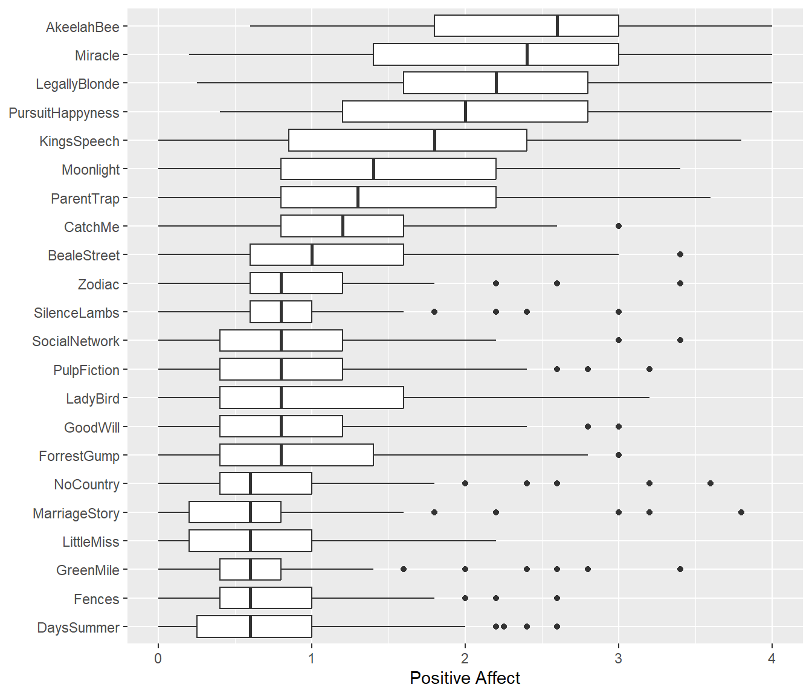
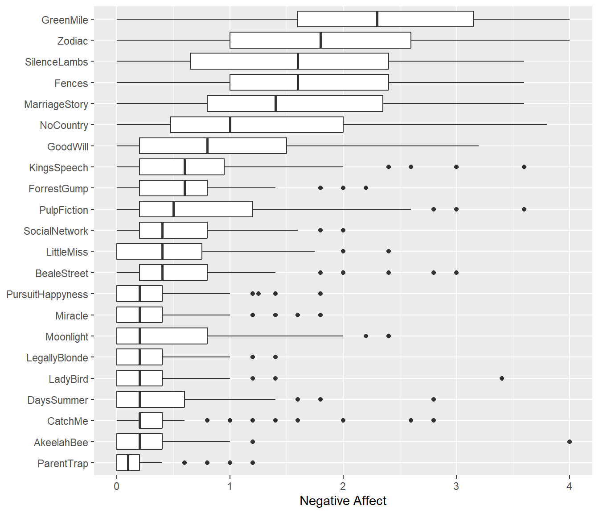
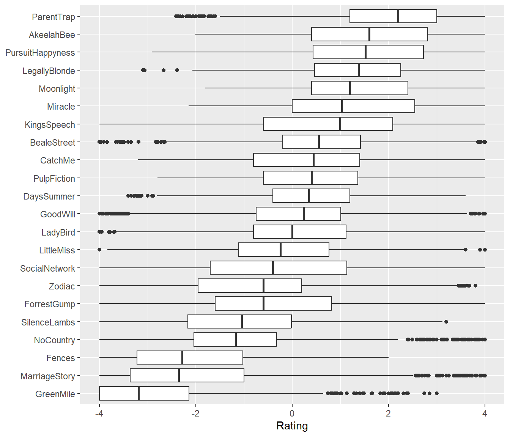

Database Overview
Clip Information
The database currently includes 22 video clips, each drawn from a different English-language film and ranging from 130 to 425 seconds in duration (Mdn=238, MAD=96.4). The figure below shows the distribution of the clips’ durations. The table below presents each clip’s abbreviation, source film title (and release year), as well as starting and stopping timestamp in HH:MM:SS format, and duration in seconds.

| Abbrev | Film | Clip_Start | Clip_Stop | Duration | Quality | Summary | Wikipedia | Description |
|---|---|---|---|---|---|---|---|---|
| AkeelahBee | Akeelah and the Bee (2006) | 01:42:23 | 01:45:07 | 164 | 1080 | ***Akeelah and the Bee*** is a 2006 American drama film written and directed by Doug Atchison. It tells the story of Akeelah Anderson (Keke Palmer), an 11-year-old girl who participates in the Scripps National Spelling Bee, her mother (Angela Bassett), her schoolmates, and her coach, Dr. Joshua Larabee (Laurence Fishburne). The cast also features Curtis Armstrong, J.R. Villarreal, Sean Michael Afable, Erica Hubbard, Lee Thompson Young, Julito McCullum, Sahara Garey, Eddie Steeples, and Tzi Ma. | https://en.wikipedia.org/wiki/Akeelah_and_the_Bee | In this clip, ... |
| BealeStreet | If Beale Street Could Talk (2018) | 00:03:20 | 00:06:02 | 162 | 1080 | ***If Beale Street Could Talk*** is a 2018 American romantic drama film written and directed by Barry Jenkins and based on James Baldwin's 1974 novel of the same name. It stars an ensemble cast that includes KiKi Layne, Stephan James, Colman Domingo, Teyonah Parris, Michael Beach, Dave Franco, Diego Luna, Pedro Pascal, Ed Skrein, Brian Tyree Henry, and Regina King. The film follows a young woman who, with her family's support, seeks to clear the name of her wrongly charged lover and prove his innocence before the birth of their child. | https://en.wikipedia.org/wiki/If_Beale_Street_Could_Talk_(film) | In this clip, ... |
| CatchMe | Catch Me If You Can (2002) | 00:44:32 | 00:49:06 | 274 | 720 | ***Catch Me If You Can*** is a 2002 American biographical crime comedy-drama film directed and produced by Steven Spielberg and starring Leonardo DiCaprio and Tom Hanks with Christopher Walken, Martin Sheen, Nathalie Baye, Amy Adams and James Brolin in supporting roles. The screenplay by Jeff Nathanson is based on the "autobiography" of Frank Abagnale, who claims that before his 19th birthday, he successfully performed cons worth millions of dollars by posing as a Pan American World Airways pilot, a Georgia doctor, and a Louisiana parish prosecutor. The truth of his story is questionable. | https://en.wikipedia.org/wiki/Catch_Me_If_You_Can | In this clip, ... |
| DaysSummer | 500 Days of Summer (2009) | 01:24:27 | 01:26:39 | 132 | 720 | ***500 Days of Summer*** is a 2009 American romantic comedy-drama film directed by Marc Webb from a screenplay written by Scott Neustadter and Michael H. Weber, and produced by Mark Waters. The film stars Joseph Gordon-Levitt and Zooey Deschanel and employs a nonlinear narrative structure, with the story based upon its male protagonist and his memories of a failed relationship. | https://en.wikipedia.org/wiki/500_Days_of_Summer | In this clip, ... |
| Fences | Fences (2016) | 01:21:07 | 01:23:21 | 134 | 720 | ***Fences*** is a 2016 American period drama film starring, produced and directed by Denzel Washington and written by August Wilson, based on his Pulitzer Prize-winning 1985 play of the same name. Wilson was in Pittsburgh, Pennsylvania, and originally wanted to pursue being a poet, but later found passion for being a playwright. In addition to Washington, the film also stars Viola Davis, Stephen McKinley Henderson, Jovan Adepo, Russell Hornsby, Mykelti Williamson, and Saniyya Sidney. | https://en.wikipedia.org/wiki/Fences_(film) | In this clip, ... |
| ForrestGump | Forrest Gump (1994) | 02:09:19 | 02:12:57 | 218 | 720 | ***Forrest Gump*** is a 1994 American comedy-drama film directed by Robert Zemeckis and written by Eric Roth. It is based on the 1986 novel of the same name by Winston Groom and stars Tom Hanks, Robin Wright, Gary Sinise, Mykelti Williamson and Sally Field. The film follows several decades in the life of a slow-witted and kindhearted Alabama man named Forrest Gump (Hanks) and his experiences in the 20th-century United States. The film differs substantially from the novel. | https://en.wikipedia.org/wiki/Forrest_Gump | In this clip, ... |
| GoodWill | Good Will Hunting (1997) | 00:39:23 | 00:41:53 | 150 | 720 | ***Good Will Hunting*** is a 1997 American psychological drama film directed by Gus Van Sant, and written by Ben Affleck and Matt Damon. It stars Robin Williams, Damon, Affleck, Stellan Skarsgård and Minnie Driver. | https://en.wikipedia.org/wiki/Good_Will_Hunting | In this clip, ... |
| GreenMile | The Green Mile (1999) | 02:47:40 | 02:51:39 | 239 | 720 | ***The Green Mile*** is a 1999 American fantasy drama film written and directed by Frank Darabont and based on Stephen King's 1996 novel of the same name. It stars Tom Hanks as a death row prison guard during the Great Depression who witnesses supernatural events following the arrival of an enigmatic convict (Michael Clarke Duncan) at his facility. David Morse, Bonnie Hunt, Sam Rockwell, and James Cromwell appear in supporting roles. | https://en.wikipedia.org/wiki/The_Green_Mile_(film) | In this clip, ... |
| KingsSpeech | The King's Speech (2010) | 01:40:41 | 01:47:46 | 425 | 1080 | ***The King's Speech*** is a 2010 British historical drama film directed by Tom Hooper and written by David Seidler. Colin Firth plays the future King George VI who, to cope with a stammer, sees Lionel Logue, an Australian speech and language therapist played by Geoffrey Rush. The men become friends as they work together, and after his brother abdicates the throne, the new king relies on Logue to help him make his first wartime radio broadcast upon Britain's declaration of war on Germany in 1939. | https://en.wikipedia.org/wiki/The_King%27s_Speech | In this clip, ... |
| LadyBird | Lady Bird (2017) | 01:24:40 | 01:28:32 | 232 | 720 | ***Lady Bird*** is a 2017 American coming-of-age comedy-drama film written and directed by Greta Gerwig in her solo directorial debut. Set in Sacramento, California from fall 2002 to fall 2003, the film tells the story of a high school senior and her strained relationship with her mother. It stars Saoirse Ronan in the title role with Laurie Metcalf, Tracy Letts, Lucas Hedges, Timothée Chalamet, Beanie Feldstein, Stephen McKinley Henderson, and Lois Smith in supporting roles. | https://en.wikipedia.org/wiki/Lady_Bird_(film) | In this clip, ... |
| LegallyBlonde | Legally Blonde (2001) | 01:20:26 | 01:27:20 | 414 | 1080 | ***Legally Blonde*** is a 2001 American comedy film directed by Robert Luketic in his feature-length directorial debut, and scripted by Karen McCullah Lutz and Kirsten Smith from Amanda Brown's 2001 novel of the same name. It stars Reese Witherspoon, Luke Wilson, Selma Blair, Matthew Davis, Victor Garber, and Jennifer Coolidge. The story follows Elle Woods (Witherspoon), a sorority girl who attempts to win back her ex-boyfriend Warner Huntington III (Davis) by getting a Juris Doctor degree at Harvard Law School, and in the process, overcomes stereotypes against blondes and triumphs as a successful lawyer. | https://en.wikipedia.org/wiki/Legally_Blonde | In this clip, ... |
| LittleMiss | Little Miss Sunshine (2006) | 00:13:10 | 00:15:20 | 130 | 1080 | ***Little Miss Sunshine*** is a 2006 American tragicomedy road film and the feature film directorial debut of the husband–wife team of Jonathan Dayton and Valerie Faris. The screenplay was written by first-time writer Michael Arndt. The film stars Greg Kinnear, Steve Carell, Toni Collette, Paul Dano, Abigail Breslin, and Alan Arkin, as members of a family taking the youngest to compete in a child beauty pageant. | https://en.wikipedia.org/wiki/Little_Miss_Sunshine | In this clip, ... |
| MarriageStory | Marriage Story (2019) | 01:37:24 | 01:41:24 | 240 | 720 | ***Marriage Story*** is a 2019 drama film written and directed by Noah Baumbach, who also produced the film with David Heyman. It stars Scarlett Johansson and Adam Driver as a warring couple going through a coast-to-coast divorce. Laura Dern, Alan Alda, Ray Liotta, Julie Hagerty, and Merritt Wever appear in supporting roles. | https://en.wikipedia.org/wiki/Marriage_Story | In this clip, ... |
| Miracle | Miracle (2004) | 01:36:19 | 01:42:00 | 341 | 720 | ***Miracle*** is a 2004 American sports film about the United States men's ice hockey team, led by head coach Herb Brooks, portrayed by Kurt Russell, who won the gold medal in the 1980 Winter Olympics. The American team's victory over the heavily favored Soviet professionals in the medal round was dubbed the "Miracle on Ice". Miracle was directed by Gavin O'Connor and written by Eric Guggenheim and Mike Rich. | https://en.wikipedia.org/wiki/Miracle_(2004_film) | In this clip, ... |
| Moonlight | Moonlight (2016) | 00:17:21 | 00:21:15 | 234 | 720 | ***Moonlight*** is a 2016 American coming-of-age drama film written and directed by Barry Jenkins, based on Tarell Alvin McCraney's unpublished semi-autobiographical play In Moonlight Black Boys Look Blue. The film stars Trevante Rhodes, André Holland, Janelle Monáe, Ashton Sanders, Jharrel Jerome, Naomie Harris, and Mahershala Ali. | https://en.wikipedia.org/wiki/Moonlight_(2016_film) | In this clip, ... |
| NoCountry | No Country for Old Men (2007) | 00:20:50 | 00:25:12 | 262 | 720 | ***No Country for Old Men*** is a 2007 American neo-Western crime thriller film written and directed by Joel and Ethan Coen, based on Cormac McCarthy's 2005 novel of the same name. Starring Tommy Lee Jones, Javier Bardem, and Josh Brolin, the film is set in the desert landscape of 1980 West Texas. The film follows three main characters: Llewelyn Moss (Brolin), a Vietnam War veteran and welder who stumbles upon a large sum of money in the desert; Anton Chigurh (Bardem), a hitman who is tasked with recovering the money; and Ed Tom Bell (Jones), a local sheriff investigating the crime. The film also stars Kelly Macdonald as Moss's wife Carla Jean, and Woody Harrelson as a bounty hunter seeking Moss and the return of the $2 million. | https://en.wikipedia.org/wiki/No_Country_for_Old_Men | In this clip, ... |
| ParentTrap | The Parent Trap (1998) | 00:45:09 | 00:52:14 | 425 | 720 | ***The Parent Trap*** is a 1998 American romantic comedy film directed and co-written by Nancy Meyers, and produced and co-written by Charles Shyer. It is a remake of the 1961 film of the same name and an adaptation of Erich Kästner's 1949 German novel Lisa and Lottie (Das doppelte Lottchen). Dennis Quaid and Natasha Richardson star as a divorced couple who separated shortly after their identical twin daughters' birth; Lindsay Lohan stars (in her film debut) as both twins, Hallie Parker and Annie James, who are fortuitously reunited at summer camp after being separated at birth. David Swift wrote the screenplay for the original 1961 film based on Lottie and Lisa. Swift is credited along with Meyers and Shyer as co-writers of the 1998 version. | https://en.wikipedia.org/wiki/The_Parent_Trap_(1998_film) | In this clip, ... |
| PulpFiction | Pulp Fiction (1994) | 00:14:23 | 00:18:16 | 233 | 720 | ***Pulp Fiction*** is a 1994 American crime film written and directed by Quentin Tarantino, who conceived it with Roger Avary.[4] Starring John Travolta, Samuel L. Jackson, Bruce Willis, Tim Roth, Ving Rhames, and Uma Thurman, it tells several stories of crime in Los Angeles, California. The title refers to the pulp magazines and hardboiled crime novels popular during the mid-20th century, known for their graphic violence and punchy dialogue. | https://en.wikipedia.org/wiki/Pulp_Fiction | In this clip, ... |
| PursuitHappyness | The Pursuit of Happyness (2006) | 00:24:21 | 00:28:18 | 237 | 720 | ***The Pursuit of Happyness*** is a 2006 American biographical drama film directed by Gabriele Muccino and starring Will Smith as Chris Gardner, a homeless salesman. Smith's son Jaden Smith co-stars, making his film debut as Gardner's son, Christopher Jr. The screenplay by Steven Conrad is based on the best-selling 2006 memoir of the same name written by Gardner with Quincy Troupe. It is based on Gardner's nearly one-year struggle being homeless. The unusual spelling of the film's title comes from a mural that Gardner sees on the wall outside the daycare facility his son attended. The movie is set in San Francisco in 1981. | https://en.wikipedia.org/wiki/The_Pursuit_of_Happyness | In this clip, ... |
| SilenceLambs | The Silence of the Lambs (1991) | 00:14:14 | 00:18:48 | 274 | 1080 | ***The Silence of the Lambs*** is a 1991 American psychological horror film directed by Jonathan Demme and written by Ted Tally, adapted from Thomas Harris's 1988 novel. It stars Jodie Foster as Clarice Starling, a young FBI trainee who is hunting a serial killer, "Buffalo Bill" (Ted Levine), who skins his female victims. To catch him, she seeks the advice of the imprisoned Dr. Hannibal Lecter (Anthony Hopkins), a brilliant psychiatrist and cannibalistic serial killer. The film also features performances from Scott Glenn, Anthony Heald, and Kasi Lemmons. | https://en.wikipedia.org/wiki/The_Silence_of_the_Lambs_(film) | In this clip, ... |
| SocialNetwork | The Social Network (2010) | 00:00:27 | 00:05:21 | 294 | 720 | ***The Social Network*** is a 2010 American biographical drama film directed by David Fincher and written by Aaron Sorkin, based on the 2009 book *The Accidental Billionaires* by Ben Mezrich. It portrays the founding of social networking website Facebook. It stars Jesse Eisenberg as the Facebook founder Mark Zuckerberg, with Andrew Garfield as Eduardo Saverin, Justin Timberlake as Sean Parker, Armie Hammer as Cameron and Tyler Winklevoss, and Max Minghella as Divya Narendra. Neither Zuckerberg nor any other Facebook staff were involved with the project, although Saverin was a consultant for Mezrich's book. | https://en.wikipedia.org/wiki/The_Social_Network | In this clip, ... |
| Zodiac | Zodiac (2007) | 02:16:07 | 02:21:36 | 315 | 720 | ***Zodiac*** is a 2007 American mystery thriller film directed by David Fincher from a screenplay by James Vanderbilt, based on the non-fiction books by Robert Graysmith, Zodiac and Zodiac Unmasked, which were published in 1986 and 2002, respectively. The film stars Jake Gyllenhaal, Mark Ruffalo, and Robert Downey Jr. with Anthony Edwards, Brian Cox, Elias Koteas, Donal Logue, John Carroll Lynch, Chloë Sevigny, Philip Baker Hall and Dermot Mulroney in supporting roles. | https://en.wikipedia.org/wiki/Zodiac_(film) | In this clip, ... |
Valence Ratings
Each clip was continuously rated on its emotional valence at a frequency of 1 Hz and using a scale ranging from -4 (very negative) to 4 (very positive). The number of participants rating each clip ranged from 27 to 36 (Mdn=30, MAD=1.5). The table below provides the number of raters and duration per clip as well as a summary of the valence ratings distribution across raters (i.e., mean, standard deviation, and quartiles).


| Abbrev | Raters | Mean | SD | p0 | p25 | p50 | p75 | p100 |
|---|---|---|---|---|---|---|---|---|
| AkeelahBee | 33 | 1.66 | 1.52 | -2.03 | 0.40 | 1.60 | 2.81 | 4.00 |
| BealeStreet | 30 | 0.57 | 1.35 | -4.00 | -0.20 | 0.55 | 1.42 | 4.00 |
| CatchMe | 36 | 0.33 | 1.45 | -3.20 | -0.80 | 0.44 | 1.40 | 4.00 |
| DaysSummer | 31 | 0.38 | 1.25 | -3.40 | -0.40 | 0.35 | 1.20 | 3.60 |
| Fences | 30 | -2.09 | 1.39 | -4.00 | -3.22 | -2.28 | -1.02 | 2.00 |
| ForrestGump | 32 | -0.44 | 1.61 | -4.00 | -1.60 | -0.60 | 0.81 | 4.00 |
| GoodWill | 29 | 0.12 | 1.50 | -4.00 | -0.75 | 0.23 | 1.01 | 4.00 |
| GreenMile | 30 | -2.71 | 1.42 | -4.00 | -4.00 | -3.19 | -2.14 | 3.00 |
| KingsSpeech | 29 | 0.77 | 1.75 | -4.00 | -0.60 | 0.99 | 2.09 | 4.00 |
| LadyBird | 29 | 0.23 | 1.44 | -4.00 | -0.80 | 0.00 | 1.12 | 4.00 |
| LegallyBlonde | 30 | 1.33 | 1.35 | -3.10 | 0.46 | 1.38 | 2.25 | 4.00 |
| LittleMiss | 29 | -0.17 | 1.50 | -4.00 | -1.11 | -0.24 | 0.77 | 4.00 |
| MarriageStory | 29 | -1.97 | 1.76 | -4.00 | -3.36 | -2.35 | -1.00 | 4.00 |
| Miracle | 30 | 1.16 | 1.57 | -2.15 | 0.00 | 1.03 | 2.55 | 4.00 |
| Moonlight | 30 | 1.41 | 1.27 | -1.80 | 0.40 | 1.20 | 2.40 | 4.00 |
| NoCountry | 29 | -1.08 | 1.35 | -4.00 | -2.04 | -1.17 | -0.33 | 4.00 |
| ParentTrap | 33 | 2.06 | 1.28 | -2.41 | 1.20 | 2.20 | 3.00 | 4.00 |
| PulpFiction | 32 | 0.44 | 1.38 | -2.80 | -0.60 | 0.40 | 1.36 | 4.00 |
| PursuitHappyness | 32 | 1.50 | 1.52 | -2.91 | 0.43 | 1.52 | 2.72 | 4.00 |
| SilenceLambs | 31 | -1.14 | 1.42 | -4.00 | -2.16 | -1.04 | -0.02 | 3.20 |
| SocialNetwork | 27 | -0.33 | 1.79 | -4.00 | -1.70 | -0.40 | 1.13 | 4.00 |
| Zodiac | 29 | -0.75 | 1.58 | -4.00 | -1.96 | -0.60 | 0.20 | 3.80 |
